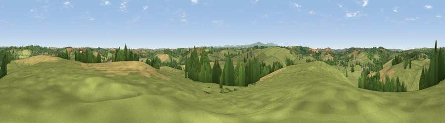

Viewpoint near Lapford
#18762 in England · top 30% of its area beats it · near Lapford · access?Where it is
The exact computed spot (SS 72125 06625). Click the marker for map links.
Public access: no public right of way or access land is recorded at this exact spot — it may be on private land. Computed from Natural England's CRoW access layer and OpenStreetMap rights of way — not the legal definitive map. Always verify locally.
The view, rendered

A 360° render of this exact spot computed from the terrain model, tree cover and land cover — summer colours, afternoon light, calibrated against photographs of famous viewpoints. Real trees, hedges and buildings will differ in detail.
The panorama
Grey silhouette: terrain skyline in each direction (720 bearings, Earth curvature and refraction included). Dashed green: skyline with trees (+15 m) and buildings (+8 m) as obstacles. Blue strip: how far the ground is visible on each bearing.
Where the view opens
Wedge length = distance to the farthest visible ground on that bearing (vegetation-aware). Rings at 10, 25 and 50 km.
What fills the view
74% grassland · 16% cropland · 9% woodland ·
Angular shares of the visible panorama (visual magnitude), not map area. Landscape diversity 0.33 (0–1 Shannon).
Key numbers
More beautiful places nearby
The staircase of upgrades: each row has a higher view potential than everything closer. Driving times are estimates from straight-line distance, calibrated against real road routing — check an actual route before setting out.
| Place | Direction | Drive | Score |
|---|---|---|---|
| Viewpoint near Lapford | NNE · 3 km | ~8 min | 59.6 |
| Serstone Hill | SSE · 4 km | ~9 min | 61.1 |
| Cadford Moors | WNW · 7 km | ~14 min | 63.9 |
| Woolsgrove Hill | ESE · 8 km | ~16 min | 64.0 |
| Viewpoint near Venny Tedburn | SE · 13 km | ~23 min | 70.1 |
| Viewpoint near Sticklepath | SSW · 16 km | ~28 min | 73.5 |
| Viewpoint near Stockleigh Pomeroy | E · 17 km | ~29 min | 74.7 |
| Viewpoint near South Zeal | SSW · 17 km | ~30 min | 75.0 |
50.84497, -3.81770 · source: screening · position refined by local search. Computed location — check access rights before visiting.